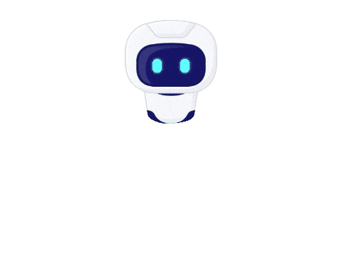

<!DOCTYPE html>
<html lang="de">

<head>
  <meta charset="UTF-8" />
  <link rel="icon" type="image/png" href="/src/assets/img/logo.jpg">

  <meta name="viewport" content="width=device-width, initial-scale=1.0" />
  <meta name="description"
    content="Alpay Celik, ein erfahrener Fullstack Webentwickler, präsentiert seine neuesten Projekte, die mit dem MERN-Stack entwickelt wurden." />
  <title>Future is AI Website</title>
  <style>
    .circle {
      height: 10px;
      width: 10px;
      border-radius: 10px;
      background-color: black;
      position: fixed;
      top: 0;
      left: 0;
      pointer-events: none;
      z-index: 99999999;
      display: none;
      /* Hide circles initially */
    }

    body {
      cursor: none;
      /* Hide default cursor */
    }

    .image {
      height: 70px;
      width: 100px;
      position: fixed;
      pointer-events: none;
      z-index: 999999;
      /* Ensure images are above circles */
    }


    /* #cursor {
      position: absolute;
      top: 0;
      left: 0;
      pointer-events: none;
      z-index: 9999;
      display: none;
      width: 90px;
      height: 60px;
    } */
  </style>
</head>

<body>
  <!--  -->
  <div class="circle"></div>
  <div class="circle"></div>
  <div class="circle"></div>
  <!-- Add your images here -->
  
  
  <!-- Add more images as needed -->

  <div id="root"></div>
  <script type="module" src="/src/main.tsx"></script>
  <script>
    const coords = { x: 0, y: 0 };
    const circles = document.querySelectorAll(".circle");
    const images = document.querySelectorAll(".image");

    window.addEventListener("mousemove", function (e) {
      coords.x = e.clientX;
      coords.y = e.clientY;
    });

    function animateImages() {
      let x = coords.x;
      let y = coords.y;

      images.forEach(function (image, index) {
        image.style.left = x - (image.width / 2) + "px"; // Adjust for the image's width
        image.style.top = y - (image.height / 2) + "px"; // Adjust for the image's height
      });

      requestAnimationFrame(animateImages);
    }

    animateImages();

  </script>
  <!-- <script>
    const cursor = document.getElementById('cursor');

    // Update cursor position on mousemove event
    window.addEventListener("mousemove", function (e) {
      cursor.style.display = "block"; // Show the cursor image
      cursor.style.left = e.pageX - cursor.offsetWidth / 2 + "px"; // Adjust position to center image
      cursor.style.top = e.pageY - cursor.offsetHeight / 2 + "px";
    });

    // Hide the cursor when mouse leaves the window
    window.addEventListener("mouseout", function () {
      cursor.style.display = "none";
    });
  </script> -->
<script>
 window.difyChatbotConfig = {
  token: 'WfbUMAp8vFeBZlPP'
 }
</script>
<script
 src="https://udify.app/embed.min.js"
 id="WfbUMAp8vFeBZlPP"
 defer>
</script>
  
</body>

</html>
